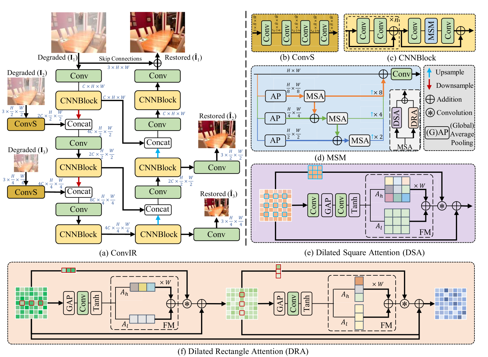
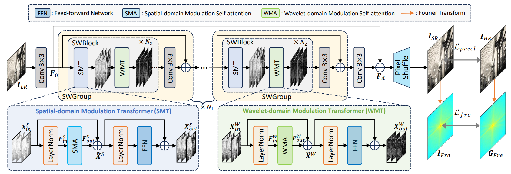
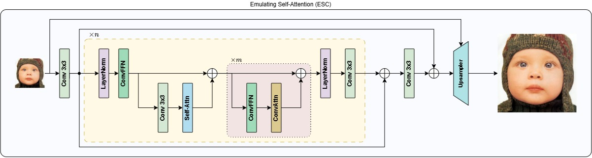

Computational Vision Tasks for Image Reconstruction
Apresentação
Essa aplicação é o produto final da disciplina de Estágio Supervisionado do 7º período do curso de bacharelado em Sistemas de Informação na Universidade Federal do Acre (Ufac) e desenvolvida para o PAVIC-Lab. O objetivo do projeto é desenvolver uma aplicação web que permita o processamento e generalização de imagens em três linhas de pesquisa desenvolvidas no PAVIC-Lab: Image Dehazing, Super-Resolução e HDR (High Dynamic Range).
I – Super‑Resolução
A Super‑Resolução é o processo de reconstruir uma imagem de alta resolução a partir de uma imagem de baixa resolução. Seu objetivo é aumentar a qualidade visual, recuperando detalhes e estruturas que foram perdidos durante a aquisição ou redução da imagem.
II – Image Dehazing
Image Dehazing é a tarefa de remover os efeitos causados por neblina, fumaça ou outras partículas presentes na atmosfera, que reduzem a visibilidade e o contraste das imagens. O processo busca recuperar cores, detalhes e informações visuais presentes na cena original.
III – HDR
A reconstrução de imagens em HDR (High Dynamic Range) consiste em combinar informações de diferentes exposições para produzir uma imagem com maior faixa dinâmica. Dessa forma, é possível representar simultaneamente detalhes em regiões muito claras e muito escuras da cena.
Diagramação das arquiteturas utilizadas

UDPNet: Unleashing Depth-based Priors for Robust Image Dehazing.

ConvIR: Revitalizing Convolutional Network for Image Restoration.

DMNet: Dual-Domain Modulation Network.

ESC: Emulate Self-Attention with Convolution.

PSHDR: Pavic Single HDR.